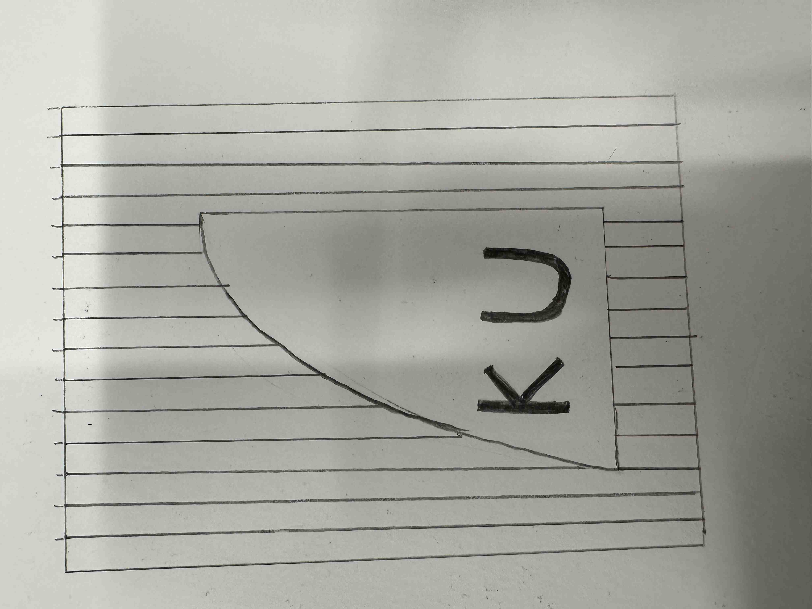
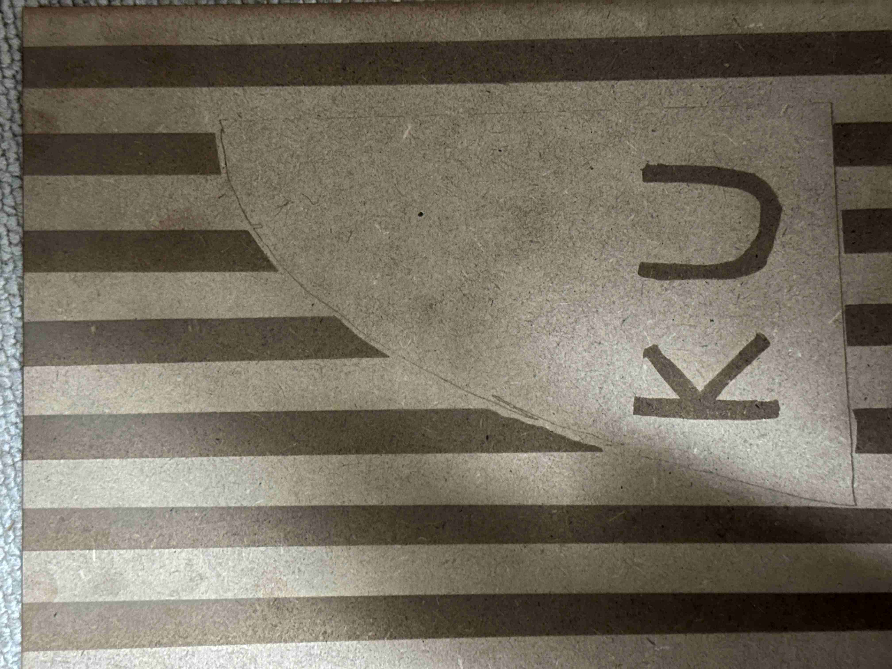
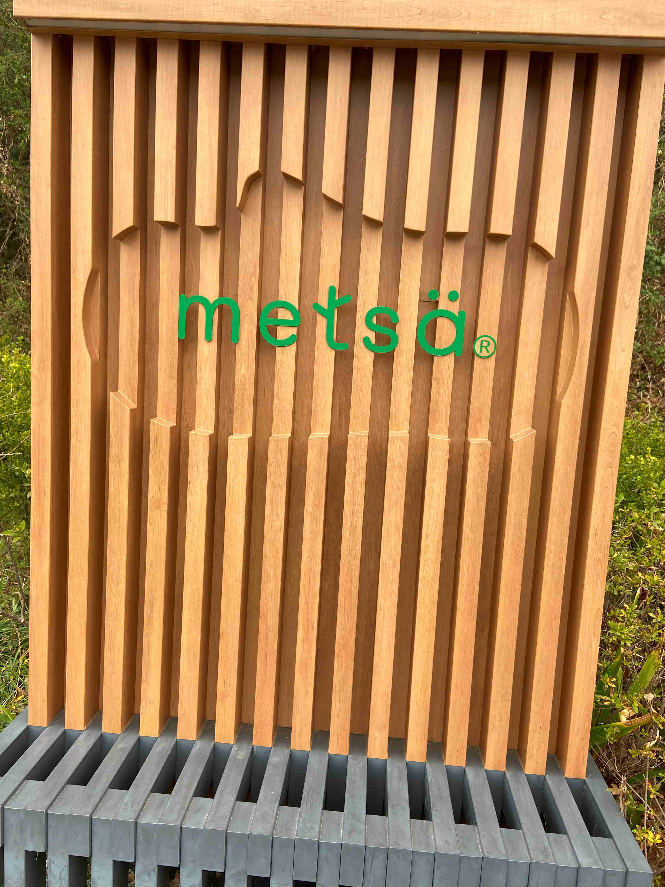

スケッチ

作品

設計ファイル
DXFファイル
説明

この写真は、私がムーミンバレーパークへ行ったときに見つけた、ムーミンバレーパークの運営会社であるmetsaの看板です。こちらに過去感銘を受けたのでこちらから発想を得ました。
metsaの看板ではバレーパークの象徴である宮沢湖の形をかたどっていたため、同じようにみなとみらいの特徴的なホテルを書きました。
友人からの勧めやチャレンジしてみようという気持ちがあり、自分で書いた絵をdxfファイルに変更し、それをイラストレーターに読み込むという方法をとりました。
そこまで複雑なデザインではなかったものの、読み込み時にかなり多くのずれや空白が発生して、結果としては
満足いかない作品になりました。
次回からはしっかりFUSIONをつかって作品を作りたいと思いました。